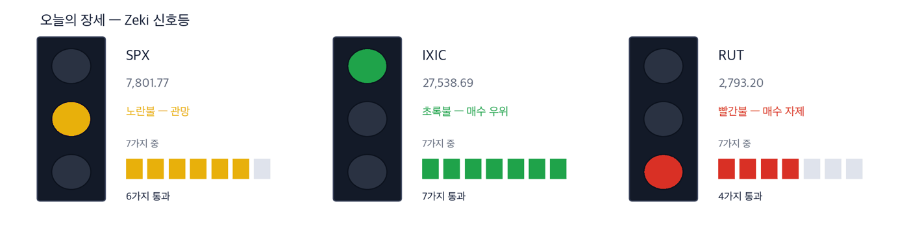
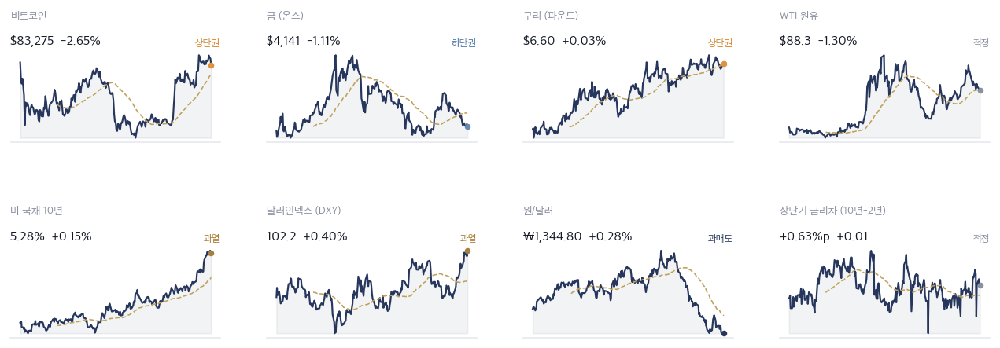
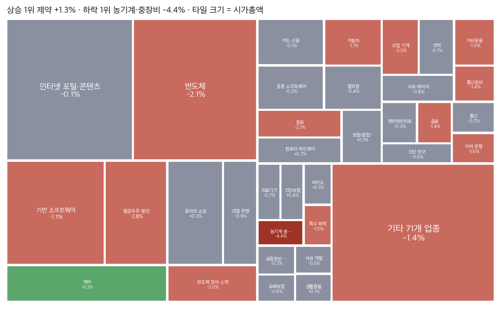
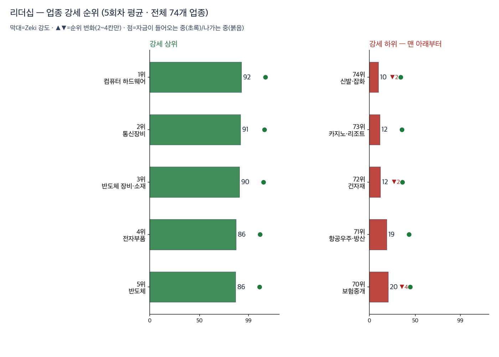
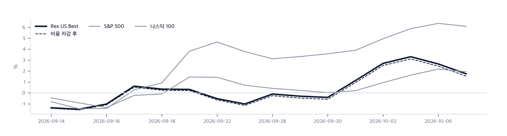

|
ZekiRex™ Apex US — 2026년 10월 8일
오늘의 판단 · 1/3
데이터 기준 10/7 (ET) 종가 · 밤사이 서울 10/8 종가(현지시간) |
ZekiRex™ |
|
|
연준 「연내 한 번 더 인상」… 10년물 입찰 5.3% |
| 저희가 정한 규칙이 고른 종목과 그 성적을 매일 그대로 싣습니다. 맞았든 틀렸든 지우지 않습니다. |
|
THE REX CALL
10/7 공개된 연준 9월 의사록은 연내 한 번 더 인상 쪽으로 읽혔습니다. 같은 날 10년물 국채 입찰은 5.300%에 팔렸고, S&P 500은 최고치에서 물러섰습니다.
10/7 계좌 기준으로 마이크론·델·마라톤페트롤리엄·HF싱클레어 4종목을 들고 있고 현금은 72.93%입니다. 10/7에는 사고판 것이 없습니다.
오늘 반드시 알아야 할 것
1. 9월 FOMC 의사록에서 참석자 대다수는 연내 한 번 더 인상이 적절하다고 봤습니다(조선일보·월스트리트저널). 2. 후티의 사우디 공격과 페르시아만 유조선 피격에 브렌트유가 10/8 104달러를 넘었습니다(월스트리트저널·가디언). 3. 서울에서는 10/8(현지시간) 삼성전자가 3분기 영업이익 107조4천억 원을 냈지만 코스피는 2.62% 내렸습니다(연합뉴스). 4. TSMC의 3분기 매출이 사상 최대로 시장 예상을 웃돌았습니다. 대만 10/8(현지시간) 발표입니다(로이터). 5. 오라클·브로드컴·스페이스X가 AI 칩 대금을 마련하려고 아폴로·블랙스톤 등과 대형 차입을 논의합니다(월스트리트저널).
| |
 초록불은 매수 우위, 노란불은 관망, 빨간불은 매수 자제입니다. 칸은 7가지 조건 중 몇 가지를 만족하는지이고, 많을수록 오르는 종목이 넓게 퍼져 있습니다. |
최근 10거래일 국면 추이 (왼쪽이 과거). 10거래일 내내 노란불입니다 — 바뀐 날이 없습니다 방향 — 어디까지 왔나. Zeki 신호등은 7가지 조건을 세어 정합니다. 나스닥 종합은 7가지를 모두 만족했고 S&P 500은 6가지입니다. 러셀 2000은 4가지로 빨간불입니다. 세 지수 모두 지난 판과 같습니다. 지수는 내렸지만 신호등의 칸 수는 그대로입니다.
| |
| 오늘의 조치 |
| 오늘 신규 매매 없음. 규칙이 요구하지 않는 날에 거래하지 않는 것도 하나의 결정입니다. |
|
| 오늘 하나만 깊이 보면 |
|
연준은 인상 쪽, 장기 금리는 1년 범위 맨 위
10/7 의사록은 연내 추가 인상 쪽으로 기울었습니다. 같은 날 10년물 입찰 금리는 5.300%였습니다. S&P 500은 최고치 다음 날 0.22% 내렸습니다. 러셀 2000은 1.31% 내려 낙폭이 더 컸습니다. 금리가 오르는 날 빚 부담이 큰 작은 회사가 먼저 내린 셈입니다. 왜 그런가. AI 칩을 사는 쪽이 빚을 내고 있다는 보도가 같은 날 나왔습니다. 칩 수요의 일부가 금리에 묶여 있다는 뜻입니다. 장기 금리가 더 오르면 그 빚의 이자가 커집니다. 다음에 무엇이. 다음 판에서 볼 것은 2가지입니다. 10년물이 5.3% 위에 머무는지, 그리고 브렌트유 104달러가 정유주에 어떻게 실리는지입니다.
그래서 우리는: 작은 회사 주식을 들고 계시다면 러셀 2000이 빨간불이라는 점을 보십시오. AI 관련주를 들고 계시다면 칩을 사는 회사의 차입 비용도 함께 보십시오. 금리가 오르면 수요와 값이 함께 흔들릴 수 있습니다. 저희가 든 마이크론은 10/7 4.06% 올랐습니다.
Rex Lens™
| |
| 그 밖에 알아야 할 것 |
| 프랑스 10년물 24년 만의 최고… 유럽 은행주 이틀 하락 · 프랑스 10년물 금리가 10/7 연 4.87%로 24년 만의 최고였습니다. 유럽 은행주는 3월 뒤 가장 큰 이틀 하락이었습니다(동아일보·블룸버그). (Dong-A Ilbo · Bloomberg) → 장기 금리가 미국만의 일이 아니라는 뜻입니다. 은행주를 들고 계시다면 장기 금리 급등이 이익을 깎는지 보십시오. 저희 명단의 은행 3곳은 모두 아시아 은행입니다. | | 허리케인 이사이아스, 10/10 멕시코만 상륙 예보 · 올해 대서양 첫 허리케인 이사이아스가 10/10 멕시코만 연안에 닿을 것으로 예보됐습니다. 석유 회사들은 해상 생산을 이미 줄였습니다(스트레이츠타임스·월스트리트저널). (The Straits Times · Wall Street Journal) → 정유주를 들고 계시다면 연안 정유 설비가 멈추는지 보십시오. 원유 공급이 줄면 연료 값이 오르고, 설비가 멈추면 정유사는 팔 물량을 잃습니다. | | 한·미·일 등 15개국, 과잉생산 공동 대응 · 한·미·일 등 15개국이 자동차·배터리·화학·태양광 등 5개 분야의 과잉생산에 함께 대응합니다. 사실상 중국을 겨냥했습니다(조선일보). (Chosun Ilbo · Dong-A Ilbo) → 실제 조치가 나오기 전까지는 발표입니다. 태양광·배터리 종목을 들고 계시다면 분야별 협의체가 내놓는 첫 조치를 보십시오. | | 카타르 LNG 증설 11월 가동 전망 · 카타르에너지의 LNG 증설이 11월 가동을 앞뒀습니다. 미·러 고위 인사는 노르트스트림에 미국 투자자를 넣는 방안을 논의했습니다(로이터). (Reuters · The Straits Times) → 유럽에 들어가는 가스가 늘면 미국 가스 수출의 몫이 줄 수 있습니다. 가스 수송주를 들고 계시다면 11월 가동 시점을 보십시오. | | 미 30년 모기지 금리 7.49%… 3년 만의 최고 · 미국 30년 고정 모기지 금리가 7.49%로 3년 만의 최고였습니다. 트럼프 대통령은 연준을 비판했습니다(연합뉴스). (Yonhap KR) → 10년물이 오르면 집을 사는 이자도 따라 오릅니다. 건설·주택 관련주를 들고 계시다면 이 금리가 주택 수요를 줄이는지 보십시오. |
|
한국과 미국을 잇는 것: 뉴욕에서 마이크론은 10/7 4.06% 올랐습니다. 서울에서는 10/8(현지시간) 삼성전자가 기록적 이익을 내고도 2.42% 내렸습니다. 같은 메모리 이익을 두 시장이 다르게 값 매긴 것입니다. 10/8 뉴욕 장에서 메모리주가 어느 쪽을 따르는지 보십시오. |
|
|
시장이 오늘 한 일 · 2/3
데이터 기준 10/7 (ET) 종가 · 밤사이 서울 10/8 종가(현지시간) |
ZekiRex™ |
|
|
| 핵심 지표 |
S&P 500 7,802 -0.22% · 고점 −0.2% 최고치 다음 날 0.22% 내려 52주 고점에서 0.2% 아래입니다. 7가지 중 6가지를 만족해 노란불입니다. 신고가권 | 나스닥 종합 27,539 -0.22% · 고점 −0.2% 27,539로 0.22% 내렸지만 52주 고점 근처입니다. 7가지를 모두 만족해 초록불입니다. 과열 | 러셀 2000 2,793 -1.31% · 고점 −9.0% 52주 고점에서 9.0% 아래로 멀어졌습니다. 7가지 중 4가지로 빨간불입니다. 박스권 | 미 국채 10년 5.28% 5.28%로 1년 범위 맨 위의 과열 구간입니다. 입찰 금리는 5.300%였습니다. 주가를 매기는 기준이 더 높아졌습니다. 과열 | 달러인덱스 102.2 과열 | 포트폴리오 +8.47% 현금 73% · 보유 4종목 설정 이후 수익률 +8.47%는 10/7 기준입니다. 같은 기간 SPY는 +0.86%, QQQ는 +5.46%입니다. 델 +32.82%, 마라톤페트롤리엄 +22.74%, HF싱클레어 +21.44%, 마이크론 +0.37%입니다. 손절가를 밑돈 종목은 없습니다. 설정 이후 |
|
Rex Pulse 거시 지표 8종 1년 추이  Rex Pulse™ — 거시 지표 8종, 1년 흐름과 50일 평균값(점선) · 기준 뉴욕 10/7 종가, 서울 10/8 종가(현지시간) |
미 국채 10년물은 5.28%, 30년물은 5.66%로 1년 범위 맨 위의 과열 구간입니다. 2년물은 4.65%로 그대로였습니다. 달러인덱스는 0.4% 오른 102.2로 과열 구간에 들어섰습니다. WTI는 1.3% 내린 88.3달러, 금은 1.11% 내렸습니다. 비트코인은 2.65% 내렸습니다. 브렌트유는 10/7 0.38% 내린 100.2달러였습니다. 10/8 104달러를 넘은 것은 이 패널 뒤의 일입니다. 그 유가가 10년물을 더 밀어 올리면 주식의 금리 부담이 커집니다. |
업종 히트맵 — 오늘의 상승·하락 지도  색은 당일 등락(짙을수록 큼), 타일은 시가총액입니다. 상단에 당일 상승·하락 1위가 적혀 있고, 큰 칸이 움직인 날이 지수가 움직인 날이라는 뜻입니다 — 아래 리더십 순위(추세의 힘)와 함께 읽으십시오. |
| 리더십 — 업종 강세 순위 |
 이 그림 읽는 법 | 막대 | 그 업종 종목들을 Zeki 강도 순으로 세웠을 때 종목 절반이 그 위, 절반이 그 아래인 값입니다. 최근 5회차를 평균해 하루치 흔들림을 걷어냈습니다. | | ▲▼ 숫자 | 하루 전보다 순위가 몇 칸 움직였는지입니다. 1칸은 너무 작고 5칸 이상은 절반이 되돌아와서(실측) 2~4칸만 적습니다. | | 점 | 20거래일 자금 순위의 방향입니다. 초록이면 들어오는 중, 붉으면 나가는 중입니다. | | 공동 순위 | 값이 같으면 같은 순위입니다. 억지로 가르지 않습니다. | | 강세 상위 | 강도가 가장 높은 업종들입니다. 자리가 열리면 여기서부터 찾습니다. | | 강세 하위 | 전체 업종 가운데 맨 아래입니다. 번호는 왼쪽과 같은 잣대라, 38개 업종이면 38위가 가장 약합니다. 지금 새로 살 자리가 아니고, 들고 계신 종목이 여기 속하면 손절가부터 확인하실 자리입니다. 바닥에서 돌아서는 업종은 막대보다 점이 먼저 초록으로 바뀝니다. | | 번호가 건너뛰면 | ＋ 표시가 붙은 업종입니다. 맨 아래 다섯에 들지는 않았지만 본문이 짚었거나 저희가 들고 있어 함께 실었습니다. 자료가 빠진 것이 아닙니다. |
| 순위 | 업종 | Zeki 강도 | 변화 |
|---|
| 1위 | 컴퓨터 하드웨어 | 92 | 그대로 | | 2위 | 통신장비 | 91 | ▲1 | | 3위 | 반도체 장비·소재 | 90 | ▼1 | | 74위 | 신발·잡화 | 10 | ▼2 | | 73위 | 카지노·리조트 | 12 | 그대로 | | 72위 | 건자재 | 12 | ▼2 |
|
| 수급 — 거래로 되짚은 자금 흐름 |
|
수급과 거래량을 한 줄로 | 종목 | 수급 3개월→2주 | 거래량 | 어떻게 읽나 |
|---|
| PTC Inc PTC | A → A = | 6.22배 | 관심✓ — 3개월도 2주도 사는 쪽입니다 | | Public Service Enterprise Group PEG | E → A ↑ | 1.99배 | 관심✗ — 매수세가 세게 붙었습니다 | | STARWOOD PROPERTY TRUST INC. Starwood Property Trust STWD | E → E = | 1.80배 | 관심✗ — 3개월도 2주도 사는 쪽입니다 | | AGNC Investment AGNC | E → E = | 1.58배 | 관심✗ — 3개월도 2주도 사는 쪽입니다 | | MGM Resorts International MGM | E → E = | 1.49배 | 관심✗ — 3개월도 2주도 사는 쪽입니다 | | Frontline Plc FRO | A → A = | 1.42배 | 관심✓ — 3개월도 2주도 사는 쪽입니다 | | Axsome Therapeutics AXSM | E → E = | 1.42배 | 관심✗ — 3개월도 2주도 사는 쪽입니다 | | NetApp Inc NTAP | A → A = | 1.36배 | 관심✓ — 3개월도 2주도 사는 쪽입니다 |
거래량은 최근 5거래일 평균 ÷ 50일 평균입니다. ✓ 는 저희 진입 규칙(MACD 라인 > 0)도 통과했다는 뜻이고, ✗ 는 수급은 좋지만 규칙 밖이라는 뜻입니다. 이 읽는 법이 맞는지는 지금 세고 있습니다. |
결론은 아직 없습니다 — 칸마다 9건이고 60건이 필요합니다. 하루 9건씩 쌓이므로 약 6거래일 뒤에 답이 나옵니다. 그때 답하는 것은 「매수세로 돌아선 종목이 정말 올랐나, 매도세로 돌아선 종목이 정말 내렸나」입니다. 9월 18일부터 세고 있습니다 — 매도세 · 3개월도 2주도 9건 · 매도세 · 최근 2주부터 9건 · 매수세 · 3개월도 2주도 9건 · 매수세 · 최근 2주부터 9건.
미국에는 일별로 누가 샀는지 공시가 없습니다. 기관 보유는 분기에 한 번 그것도 45일 늦게 나옵니다. 그래서 이 그림은 사람이 아니라 거래를 봅니다 — 0.50 이 기준이고, 오른쪽으로 갈수록 3개월 동안, 위로 갈수록 최근 2주 동안 오르는 날에 거래가 몰렸다는 뜻입니다.
업종 — 값의 강세와 돈의 흐름을 나란히
돈이 먼저 온 곳 — 값은 아직
| 업종 | 강세 | 자금 | 20거래일 |
|---|
| IT서비스 | 84 | 10 | +0.034 |
| 증권 | 62 | 24 | +0.000 |
| 할인점 | 47 | 13 | +0.024 |
값만 센 곳 — 돈은 빠지는 중
| 업종 | 강세 | 자금 | 20거래일 |
|---|
| 트럭 운송 | 30 | 94 | -0.096 |
| 반도체 장비·소재 | 4 | 52 | -0.034 |
| 석유 장비·서비스 | 26 | 73 | -0.051 |
강세 순위 — Zeki 강도(12개월 가중)로 세운 순위입니다. 최근 5회차를 평균해 하루치 흔들림을 걷어냈습니다.
자금 순위 — 20거래일 순매수로 세운 순위입니다. 값이 아니라 돈이 들어온 양을 봅니다.
공동 순위 — 값이 같으면 같은 순위를 줍니다. 억지로 가르지 않습니다.
두 순위가 어긋나면 — 그 자리가 볼 만합니다. 돈이 먼저 오면 값이 아직인 것이고, 값이 먼저 세면 돈이 빠지는 중일 수 있습니다.
| Rex 25™ — 당일 등락률 전체 순위 |
| 01 ● MU Micron Technology+4.06% | | 02 P Everpure+3.71% | | 03 ● MPC Marathon Petroleum+2.29% | | 04 ● DINO HF Sinclair+0.90% | | 05 ● DELL Dell Technologies+0.86% | | 06 PBR Petroleo Brasileiro S.+0.80% | | 07 PSX Phillips 66+0.68% | | 08 SN SharkNinja+0.25% | | 09 CVI CVR Energy-0.07% | | 10 CHEF The Chefs' Warehouse-0.18% | | 11 OKTA Okta-0.31% | | 12 LPG Dorian LPG-0.43% | | 13 AMD Advanced Micro Devices-0.55% | | 14 APA APA-0.66% | | 15 LRCX Lam Research-1.31% | | 16 KEYS Keysight Technologies-1.70% | | 17 CVE Cenovus Energy-1.95% | | 18 CGAU Centerra Gold-2.49% | | 19 MRX Marex Group-3.18% | | 20 ALNT Allient-3.34% | | 21 WT WisdomTree-3.35% | | 22 ARW Arrow Electronics-3.49% | | 23 PRLB Proto Labs-4.12% | | 24 DIOD Diodes Incorporated-6.58% | | 25 MTRN Materion-6.87% |
|
8,069종목 가운데 62종목이 저희 기준을 넘었고 그중 위 25종목을 싣습니다. 원유 생산사 APA와 센터라골드(CGAU)가 들어오고, 민간 교정시설 운영사 코어시빅·GEO그룹이 나갔습니다. 하루 상승 위 5종목 중 4종목이 저희 보유 종목입니다. 마이크론이 평균 수준의 거래로 4.06% 올랐습니다. 하락 1위는 머티리온으로 6.87% 내렸습니다. 다이오드는 평균보다 28% 많은 거래로 6.58% 내렸습니다. 지난 판 상승 1위가 하루 만에 큰 거래를 실은 하락으로 바뀐 것이라 따로 봐야 합니다. |
| ● 표시가 우리 보유 종목입니다. 순서는 등락률만 따릅니다 — 하락 상위에 보유 종목이 있어도 그 자체가 매도 신호는 아닙니다. 매도는 −8% 손절과 오실레이터 이탈, 둘뿐입니다. |
| 관문을 통과한 종목 — 자리가 없어 담지 못한 이름들 |
| 반도체·하드웨어 6 | | AMD Advanced Micro Devic | RS 98 | $645.86 | | P Everpure, Inc. | RS 97 | $152.66 | | ALNT Allient Inc. | RS 96 | $113.33 | | TSM Taiwan Semiconductor | RS 86 | $472.20 | | LRCX Lam Research Corpora | RS 90 | $329.51 | | SMCI Super Micro Computer | RS 89 | $44.94 | | 소재·광물 3 | | CGAU Centerra Gold Inc. | RS 90 | $21.15 | | PRLB Proto Labs, Inc. | RS 93 | $93.27 | | TECK Teck Resources Ltd | RS 84 | $65.39 | | 에너지·정유 3 | | LPG Dorian LPG Ltd. | RS 94 | $56.21 | | PSX Phillips 66 | RS 94 | $271.62 | | CVI CVR Energy Inc. | RS 96 | $57.38 | | 금융 1 | | MRX Marex Group Limited | RS 93 | $71.88 | | 소비 1 | | FIGS FIGS, Inc. | RS 88 | $14.06 | | 기타 1 | | NVT nVent Electric plc | RS 89 | $167.82 |
|
왜 못 담았나. 규칙상 자리는 넷뿐이고 각 자리에 총자산 25%가 들어갑니다 — 한 종목이 −8%에 걸려도 계좌 전체로는 2% 손실이 되도록 맞춘 구조입니다. 자리를 비우는 길은 손절과 오실레이터 이탈 둘뿐이라, 더 좋은 후보가 나와도 갈아타지 않습니다.
통과 목록이 말하는 것. 62개가 35개 업종에 흩어져 있고 상위 3개 업종을 합쳐도 13종목(21%)뿐입니다. 시장의 강세는 넓습니다. 우리 4자리는 반도체·하드웨어 2, 에너지·정유 2로 나뉘어 있고 가장 큰 쪽이 반도체·하드웨어입니다. 아래는 그중 종합점수 상위 15개이며, 매수 추천이 아니라 자리가 열리면 작업을 시작할 순서입니다. |
| 한 줄 정리: Zeki 신호등은 노란불입니다. S&P 500과 나스닥 종합은 52주 고점에서 0.2% 아래에 있지만, 러셀 2000은 고점에서 9.0% 아래이고 빨간불입니다. 큰 기술주는 고점 근처에 있고 작은 회사는 더 멀어졌습니다. 고점 근처라는 표시보다 신호등을 먼저 보십시오. 신호등은 내려가는 쪽 변화를 그날 바로 반영하고, 올라가는 쪽은 3거래일을 확인한 뒤에 반영합니다. |
|
|
|
우리가 한 일 · 3/3
데이터 기준 10/7 (ET) 종가 · 밤사이 서울 10/8 종가(현지시간) |
ZekiRex™ |
|
|
기준 2026-10-07 17:16 ET 실제 운용 계좌를 그대로 비춥니다 종목·비중·매매·손절가는 모두 실제 계좌의 것입니다. 이 지면에서 고른 것은 하나도 없습니다. 계좌 금액과 주식 수는 싣지 않습니다. 추천이 아닙니다. | 종목 | 비중 | 손익 | 현재가 | 손절가 | 여유 | 보유 기간 | 다음 이벤트 | | MU | 13.4% | +0.4% | $1,087.50 | $996.84 | +9.1% | 6일 | 실적 12-23 | | DINO | 2.2% | +21.4% | $116.25 | $88.07 | +32.0% | 50일 | 실적 10-28 | | MPC | 5.5% | +22.7% | $442.01 | $331.32 | +33.4% | 45일 | 실적 11-03 | | DELL | 6.0% | +32.8% | $579.51 | $401.41 | +44.4% | 45일 | 실적 11-27 | | 현금 | 72.9% | 단기 국채 ETF(USFR)에 예치해 둡니다 |
|
포트폴리오 누적 수익률 대 벤치마크 기록 시작(8/11) 이후 — 하루보다 이쪽이 중요 | 계좌 | +8.47% | | 기준 | | S&P 500 | +0.86% | | +7.61%p | | QQQ | +5.46% | | +3.01%p |
8/11부터 10/7까지, 40거래일입니다. 개시 이후 최대 낙폭은 -8.67%였습니다. 이 기간은 실력과 운을 가릴 길이가 아닙니다. 이 수치는 규칙을 지켰는지 보는 기록이지 앞으로를 약속하는 수가 아닙니다. 지금 봐야 할 것은 최대 낙폭입니다. 같은 규칙으로 언제든 다시 겪을 수 있는 폭이라는 뜻입니다. |
실제로 사고판 기록 | 10-02 | MU | 매수 | $1,083.52 | | 09-02 | USFR | 매수 | $50.44 | | 08-24 | MPC | 매수 | $360.13 | | 08-24 | DELL | 매수 | $436.32 | | 08-19 | DINO | 매수 | $95.73 |
값은 실제로 사고판 값 그대로입니다. 주식 수와 금액은 싣지 않습니다. |
| Rex US Best — 이 뉴스레터에 실린 이름들의 성적표 |
무엇인가. 이 뉴스레터에 이름이 오른 회사들을 모아 만든 지수입니다. 관문을 통과한 종목과 포트폴리오 보유 종목을 합쳐 최대 스물아홉 곳까지, 모두 같은 비중으로 담습니다. 명단은 판이 나가는 날 그대로 적어 두고 뒤에 고치지 않습니다 — 지나고 나서 좋았던 것만 골라 넣으면 어떤 성적표도 좋아 보이기 때문입니다. 무엇을 위한 것인가. 저희가 지면에 적은 이름이 실제로 값을 하는지 숫자로 남기기 위해서입니다. 그래서 같은 기간 S&P 500 · 나스닥 100과 나란히 놓고, 사고파는 비용을 뺀 뒤의 숫자도 함께 싣습니다. 숫자 읽는 법. Zeki 강도는 같은 기간 다른 주식과 견준 주가의 힘을 100점 만점으로 매긴 것입니다. 100점에 가까울수록 많이 오른 쪽입니다. 아닌 것. 살 수 있는 상품이 아니고, 추천도 아니며, 저희 계좌의 성적도 아닙니다. |
 이 그림 읽는 법 | 무엇인가 | 그날 편지에 실린 이름 전부(Rex 25 + 보유 종목)를 똑같은 무게로 담았다면 어떻게 됐을지입니다. 살 수 있는 상품이 아니라 저희 명단의 성적표입니다. | | 두 선 | 실선은 비용 전, 점선은 매매비용을 뺀 뒤입니다. 명단이 바뀌면 갈아타는 비용이 들기 때문에 둘을 함께 싣습니다. | | Best 의 뜻 | 시장에서 최고라는 뜻이 아니라 저희 기준으로 가장 높은 점수를 받은이라는 뜻입니다. | | 길이 | 짧은 구간은 운과 실력을 가르지 못합니다. 120거래일이 쌓이기 전까지는 이 숫자로 판단하지 마십시오. |
|
Rex US Best — 지수 출범 이후 (9/11→10/7) | Rex US Best | +1.55% | | 기준 | | S&P 500 | +1.94% | | −0.40%p | | 나스닥 100 | +6.10% | | −4.56%p |
16거래일 · 비용을 뺀 값입니다. 비용 전은 +1.76%입니다. 오른쪽은 우리가 앞선 폭입니다. | 지수 대비 −4.56%p. 16회차째입니다. 저희가 미리 정한 신뢰 문턱은 120회차이고 지금은 120회 가운데 16회째입니다. 이 숫자로는 아직 잘한다고도 못한다고도 말할 수 없습니다. |
16거래일치입니다. 짧은 구간은 운과 실력을 가르지 못하므로 120거래일이 쌓이기 전까지는 이 숫자로 판단하지 마십시오. 많이 오른 쪽 | Micron Technology MU | +4.06% | | Everpure P | +3.71% — 값은 지난 1년 중 가장 높습니다. | | Marathon Petroleum MPC | +2.29% — 값은 지난 1년 중 가장 높습니다. |
많이 내린 쪽 | Materion MTRN | −6.87% | | Diodes Incorporated DIOD | −6.58% — Zeki 강도는 91점에서 93점입니다. | | Proto Labs PRLB | −4.12% |
새로 들어온 종목 | Centerra Gold CGAU, APA | | 저희 조건을 새로 갖춰 명단에 올랐습니다 |
빠진 종목 | Geo Group Inc (The) REIT GEO | 10월 6일부터 1거래일, +1.94%. 명단에서 빠졌습니다 (사유를 값으로 설명할 수 없습니다) | | CoreCivic CXW | 10월 6일부터 1거래일, +0.13%. Zeki 강도가 87점으로 내려 58위가 되어 빠졌습니다 |
|
| Rex Radar™ — 앞으로의 일정 |
| 이번 주의 핵심 — 가장 가까운 큰 일정은 10/15(목) TSMC 실적입니다. 매출 기록은 이미 나왔으니 이익률과 다음 분기 전망이 남았습니다. | 10/9(금, 서울 현지시간) 서울 증시 휴장(한글날)삼성전자 실적 뒤 서울의 다음 거래는 10/12(월, 현지시간)입니다. | 10/10(토) 허리케인 이사이아스 멕시코만 상륙 예보연안 정유 설비와 해상 생산이 얼마나 멈추는지가 정유주와 유가를 가릅니다. | 10월 14일(수) 08:30 ET 미국 소비자물가 (9월분)물가가 높게 나오면 미국 10년물 국채금리가 오르기 쉽고, 성장주가 먼저 흔들립니다. | 10/15(목) TSMC 실적매출 기록은 나왔습니다. 이익률과 다음 분기 전망이 반도체 업종의 기대를 시험합니다. | 10/28(수) HF싱클레어 실적유가와 허리케인이 정제 마진에 실렸는지 보여 줍니다. |
|
|
| 2026-10-07 종가 기준 심사 8,069종목 중 등급 산출 4,004종목 가운데 62종목이 조건을 통과했습니다. 조건 통과는 매수 추천이 아닙니다. |
| 출처: 야후 파이낸스, 16:00 ET 종가 · 서울외국환중개 고시환율(네이버 금융) · 한국 국고채·회사채 3년 금리: 네이버 금융 · 야후 파이낸스 |
|
본 리포트는 정보 제공 목적이며 개별 투자 자문이 아닙니다. ZekiRex™ Apex US는 실제 운용 계좌를 규칙 기반으로 운용합니다. 종목·비중·매매·손절가는 모두 그 계좌의 것입니다. 계좌 금액과 주식 수는 싣지 않습니다. 성과는 입출금을 뺀 수익률이며 세금은 반영되지 않았습니다. 후보를 고르는 자료에는 상장폐지된 회사가 빠져 있습니다. 살아남은 회사만 세는 셈이라 걸러낸 성과가 실제보다 높게 나옵니다. 과거의 성과는 미래를 보장하지 않으며, 투자에는 원금 손실 위험이 따릅니다. |
| This is the Rex Way, ZekiRex™ |